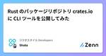
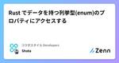
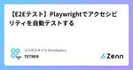

コラボスタイル Developersのフィード
https://zenn.dev/p/collabostyle
私達は『ワークスタイルの未来を切り拓く』という理念のもとワークフローの本質を追求し、新しいワークスタイルを提案するとともに、コラボスタイルが率先して時代に適したワークスタイルを常にバージョンアップし発信していきます。
フィード

Rust のパッケージリポジトリ crates.io に CLI ツールを公開してみた 1
1
コラボスタイル Developersのフィード
はじめに先日、同僚と npm, jsr などのパッケージリポジトリについて雑談をしていました。「こんな感じですぐ公開できるよ」という話に感銘を受け、Rust の crates.io という場所に公開してみたくなりました。さらに追い打ちをかけるように、Rust で書いたそのプログラム、crates.io で公開してみれば？ という記事も見つけてしまい、公開への拍車がかかってしまいました。crates.io とは？のセクションもあり、非常に参考になりました！そんなこんなで公開までのフローを書き上げてみました。▼crates.iohttps://crates.io/ 会員...
10日前

Rust でデータを持つ列挙型(enum)のプロパティにアクセスする
コラボスタイル Developersのフィード
はじめにRust のデータを持つ列挙型（enum）へのアクセスってどうやるんだ？となったので、学んだことをアウトプットします。若干のメモ書きとなっていますが、迷っている方の救いとなれば幸いです。▼参考https://doc.rust-jp.rs/book-ja/ch06-01-defining-an-enum.html 列挙型の中に構造体以下のような列挙型+構造体の組み合わせのプロパティにアクセスしたいという前提がありました。enum Members { Mike(Mike), Bob(Bob), John(John),}struct M...
11日前
お名前.com で取得したドメインのネームサーバーを Route 53 に変更して、CloudFront の代替ドメイン名に設定する 1
コラボスタイル Developersのフィード
はじめにお名前.com で取得したドメインのネームサーバーを Route 53 に変更して、CloudFront の代替ドメイン名に設定するまでの手順を紹介していきます！ ドメインのネームサーバーを Route53 に変更するお名前.com でドメイン取得した際、ネームサーバーを お名前.com のサーバーに設定していましたので、ネームサーバーを Amazon Route 53 に変更していきます。 Route 53 でホストゾーンの作成Route 53 で管理したいドメイン（お名前.com で取得されたドメイン）を入力して、ホストゾーンを作成します。ホストゾーンを...
12日前

【E2Eテスト】Playwrightでアクセシビリティを自動テストする 1
コラボスタイル Developersのフィード
はじめに今回はE2Eテストツール「Playwright」を使って、Webアクセシビリティの自動テストを試してみました。https://playwright.dev/docs/accessibility-testing アクセシビリティについてWebアクセシビリティについて、政府広報オンラインの記事で以下のように解説されています。ウェブアクセシビリティとは？ 分かりやすくゼロから解説！利用者の障害などの有無やその度合い、年齢や利用環境にかかわらず、あらゆる人々がウェブサイトで提供されている情報やサービスを利用できること、またその到達度を意味します。ウェブサイトがウ...
12日前

Rust で簡易的なマルチスレッドプログラミングをやってみる
コラボスタイル Developersのフィード
はじめにRust にはマルチスレッドプログラミング（並列処理）ができるような仕組みがあります。所有権という概念も存在するため、それらをうまく管理しつつ、どのように並列処理を実行していくかが気になりますね。私自身、正直利用回数がまだまだ少なく、半分メモ書きのような形になることをご容赦ください。 std::thread を使うstd::threadモジュールを使うことでスレッドを生成することができるようです。https://doc.rust-lang.org/std/thread/生成されたスレッドはメインスレッドから「分離」されるため、生成されたスレッドがいつ終了する...
19日前
reqwest を使って非同期処理中に外部APIを実行する
コラボスタイル Developersのフィード
はじめに本記事は、前回執筆した、[同期処理]Rust のコードで外部APIを実行するの別編です。ほとんどの内容は重複しますが、Rust の非同期ランタイムで動作する tokioというクレートを使って、非同期処理内で外部APIを実行する流れを執筆していきます。https://zenn.dev/collabostyle/articles/054c0361c86f07 非同期処理でAPIを実行する前回の記事同様に、公開されているAPIサーバーを利用させていただこうと思います。jsonplaceholderを使ってAPIをコールしていきたいと思います。https://json...
19日前
Rust | include_bytes! で特定のファイルをコンパイル対象としてバイナリに含める
コラボスタイル Developersのフィード
特定のファイルをコンパイル対象に含める初期データとなる JSON ファイルをコンパイルに含めたいなと思い調べてみると、include_bytes! というマクロが使えそうだったので試してみました！ include_bytes! マクロinclude_bytes! を使うことで、ファイルをバイト配列への参照として含めてくれます。指定するファイルパスは現在のファイルからの相対パスです。include_bytes in std - Rust include_bytes! とファイル読み込みinclude_bytes! と File によるファイル読み込みの違いを確認...
24日前
Actix Web に入門して REST API サーバーを作る
コラボスタイル Developersのフィード
はじめに今回は Rust の Web フレームワークとしてかなり有名である、Actix-Webのチュートリアル部分をやっていこうと思います。Rust には Web フレームワークが多く存在しますが、その中でも比較的歴史があり、第一線で活躍するフレームワークの一つが Actix-Webです。チュートリアル的な内容ですので、これから Actix-Webを触る方の助けになればと思います。他のWebフレームワークとの比較は以下の記事が参考になりました。https://synamon.hatenablog.com/entry/rust-server-framework-compari...
25日前
ピープルマネジメントで意識していること
コラボスタイル Developersのフィード
tl;drピープルマネジメントは、なぜ必要なのか？関係性の質を構築するためにコミュニケーションとは成長機会の創出について目標設定について なぜ必要か？あなたは、チーム全員の強み、弱み、性格、価値観を他者に紹介出来ますか？マネージャーは、成果をマネジメントするために、環境や仕組みなどの「ワーク」領域に関するマネジメントをしています。ただ、いくら仕組みを整えたからといって、それだけでは成果がでない場合もあります。行うのは「人」であって、人は感情に動かされる生き物・・・だからこそ、「ワーク」だけでなく「人（ピープル）」のマネジメントも重要であり、各人が最大の...
1ヶ月前
aws-summit-download を Rust と thirtyfour で再実装してみた
コラボスタイル Developersのフィード
【前書き】aws-summit-download とは先日、「AWS Summitの資料を一括でDLするスクリプトを作成しました。」というポストを発見しました。https://x.com/bondai_engineer/status/1805428579985232015とても便利なツールなので、早速使わせていただきました！このようなツールを OSS で公開してくださることに感謝です🙌✨ Rewrite "aws-summit-download" In Rust突然ですが、Rewriting It In Rust と言う言葉を聞いたことはあるでしょうか？ Rewr...
1ヶ月前
JetBrains AquaでPlaywrightのE2Eテストを書いてみた
コラボスタイル Developersのフィード
はじめに「Aqua」は、JetBrains社が開発したテスト自動化に特化したIDE（統合開発環境）です。テストコード作成やテスト実行が効率的におこなえるよう、以下機能などが備わっています。E2Eフレームワーク: Selenium、Playwright、Cypressをサポート。コーディング支援: Java、Kotlin、Python、JavaScript、TypeScriptなどの言語対応。Webインスペクタ: テスト対象のロケーターの検証や、CSSやXPathの指定を補完。HTTPクライアント: テスト対象のAPIを呼び出すためのHTTPクライアントを内蔵。...
1ヶ月前
Rust の Yew アプリケーションを Amazon S3 へアップロードする
コラボスタイル Developersのフィード
はじめに以前、Rustのアプリケーションをコンパイルしてフロントエンドの実装を行うライブラリ Yewを紹介しました。今回は、Yew で作ったアプリケーションを、Amazon S3に配置して、Web上からアクセスできるようにしてみたいと思います。成果物は、Yewドキュメント通りのカウンターアプリケーションとしたいと思います。🔻以前執筆した記事https://zenn.dev/collabostyle/articles/2d87a6834ec989🔻Yew Docshttps://yew.rs/ja/docs 環境構築まずは簡単ですが、環境を構築します。以下コマンド...
1ヶ月前
Momento Topics に Node.js SDK を使って入門する
コラボスタイル Developersのフィード
Momento Topics とはMomento Topics は Momento クラウドインフラストラクチャ上に構築されたパブリッシュ/サブスクライブ（pub/sub）メッセージングサービスです！https://jp.gomomento.com/services/momento-topics/ 主な特徴スケーラビリティ自動的にスケールアップ/ダウンし、トラフィックの変動に対応低レイテンシーミリ秒単位の応答時間を実現シンプルな API使いやすく、直感的な API を提供サーバーレスインフラストラクチャの管理が不要マルチプ...
1ヶ月前
API シナリオテストツール runn で E2E テストを実装する
コラボスタイル Developersのフィード
API シナリオテストツール runn とは今回は、API シナリオテストツールである runn について紹介します😉✨https://github.com/k1LoW/runn runn の主な特徴runn は Go 言語で実装されているツールで、主な特徴は以下です。発音は「ラン エヌ」です。シナリオベースのテストツールとして機能Go 言語用のテストヘルパーパッケージとして機能ワークフロー自動化ツールとして機能以下をサポート：HTTP リクエストgRPC リクエストDB クエリChrome DevTools ProtocolSSH/ローカルコマン...
2ヶ月前
egui を使って画像を差し替え、再描画させる
コラボスタイル Developersのフィード
はじめに本記事は前回の egui というクレートを使って外部の画像を表示させる記事の続編です。Github 上の png ファイルを表示させ、さらにそれを再描画（他の画像に差し替える）をやっていければと思います。https://zenn.dev/collabostyle/articles/54f81af6df6764 下準備ここは前回とほとんど同じですが、今回は、ランダムな id を生成して、それを使用して再度画像を取得し、描画したいと思いますので、randクレートを追加しておきます。Cargo.toml[dependencies]eframe = "0.27...
2ヶ月前
Rust の GUI ライブラリ egui で外部の画像を表示させる
コラボスタイル Developersのフィード
はじめにRust の GUI ライブラリの egui を使って外部の画像表示をするところをやってみました。egui は eframe というフレームワークで動作し、Rust で GUI アプリケーションを簡単に構築することができます。🔻eguihttps://github.com/emilk/egui今回は、egui で外部リンクを実行して、ポケモンの画像をそのまま取得して、表示させるところをやってみます。（外部APIから取得した画像の表示も確認可能です。）https://github.com/PokeAPI/sprites 下準備egui を動作させるために、...
2ヶ月前
[同期処理]Rust のコードで外部APIを実行する
コラボスタイル Developersのフィード
はじめにRust で外部のAPIをコールする機会はしばしば出てくると思います。私もこの辺りほとんど知識がないですが、利用する機会が出てきたのでアウトプットします。APIをコールする手段として、Rustではreqwestというクレートを利用することが一般的なようです。今回は reqwestを利用した実装方法を書いていきます。https://docs.rs/reqwest/latest/reqwest/ 同期処理でAPIを実行する同期的にAPIをコールする方法をやっていきます。jsonplaceholderを使ってAPIをコールしていきたいと思います。https://...
2ヶ月前
【Rust】ライフタイムは賞味期限
コラボスタイル Developersのフィード
はじめにRustのライフタイムと明示的アノテーションについて書きます。Rustで関数を書いたときにコンパイラに怒られたので、その内容についての投稿です。 ライフタイムとは？バナナに賞味期限があるように、変数がどのくらいの間メモリに存在するのかを示したもの。Rustでは変数がいつまで生き残っているのかをはっきりさせるために、ライフタイムという仕組みを使っています。これにより、安全にメモリを管理しています。ライフタイムの具体的な例については、以下の記事が参考になります。https://doc.rust-jp.rs/rust-by-example-ja/scope/lif...
2ヶ月前
5分でわかる！Amazon SQS入門
コラボスタイル Developersのフィード
はじめにSQS初学者向けの記事となります。SQSについてちょっとだけ説明し、実際にAWSコンソールで触ってみます。 SQSとは？SQS (Simple Queue Service) とは、AWS上でキューイングを実現するサービスです。キューイングとはキューでデータを管理する仕組みのことで、非同期にデータを受け渡すことができます。メッセージキューを利用することにより、疎結合なシステムを実現することができます。SQSの構成要素については、以下の記事がわかりやすいです。https://zenn.dev/issy/articles/zenn-sqs-overviewちなみ...
2ヶ月前
バナナでわかる！NestJS入門！
コラボスタイル Developersのフィード
はじめにNestJSをこらから学習する方向けの記事となります。やることは簡単。プロジェクトをさくっと構築してREST APIでバナナを取得するだけです。 NestJSとは？NestJSは、サーバーサイドアプリケーションを作るためのフレームワークです。サーバーサイドアプリケーションというのは、ウェブサイトの裏側で動くシステムのことです。NestJSでは、「モジュール」「コントローラー」「サービス」という3つの主要な部分を組み合わせてアプリケーションを作ります。これらを簡単に説明すると、次のようになります。 モジュール（Module）：パーツをまとめる箱アプリケーション...
2ヶ月前